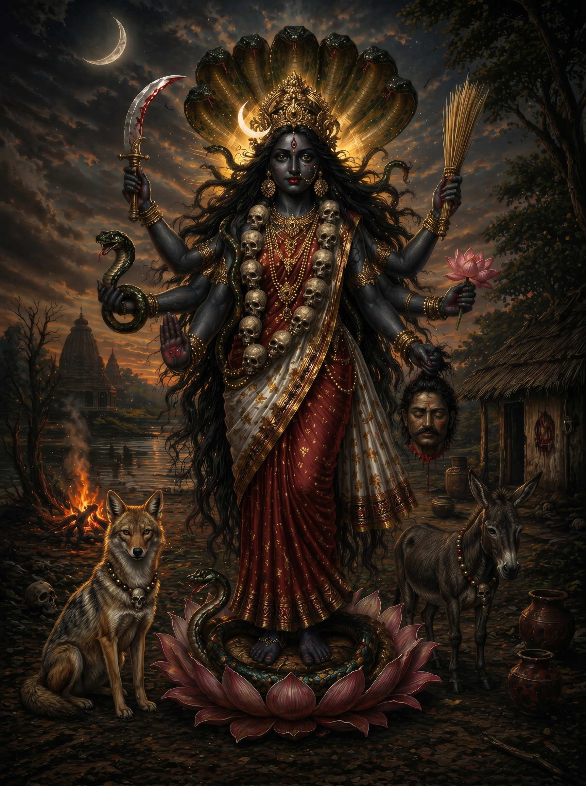
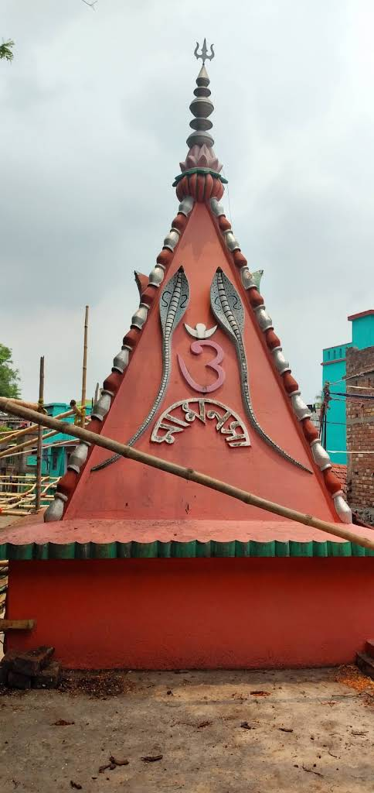
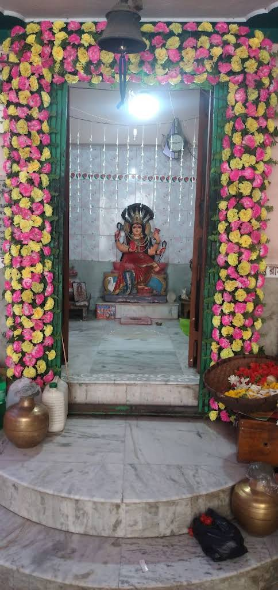

The unified form of Kali, Manasa, and Shitala —
revealed in sacred dream to Late Bhupati Charan Adak
of Nonakundu, Howrah, West Bengal
In the Shakta and Tantric tradition, a name is not a label — it is a mantra. It is the deity herself in sound form. When Devi KaMaShi revealed herself to Bhupati Charan Adak, she did not come as three separate goddesses. She came as one unified being who named herself from her own three natures.
All three are goddesses of sudden, invisible, and feared causes of death. All three are simultaneously the cause and the cure. All three are rooted in non-brahminic, folk, and tantric traditions — goddesses of common people, of farmers, of those whose lives are most exposed to the thresholds of existence. Together as KaMaShi, they are a complete guardian.
In the late 1960s, in the village of Nonakundu, Domjur, Howrah, West Bengal, a farmer and sweet shop owner named Bhupati Charan Adak received a vision in dream. It was not an ordinary dream. In the language of the Shakta tradition, it was a darshan — a divine revelation in which the goddess appeared directly with instruction.
She appeared as one unified divine being — six arms, three natures, one name. She was simultaneously Kali, Manasa, and Shitala. She was KaMaShi. And she commanded: give me a form, and worship me.
No brahmin in the village was willing to perform daily worship of this new, unrecognized form. Bhupati Charan Adak — a non-brahmin, a man of the soil — took up the worship himself. He built a temple. He maintained daily worship for the remainder of his life. He worshipped her until his death.
This places him squarely within the living tradition of Bengal, where divine mandate supersedes caste, and where the goddess chooses her devotee regardless of social station. His spiritual authority was not granted by brahmin sanction. It came directly from her.
Both Bhupati Charan Adak and his son Samir were the foremost ojhas in their village — spiritual intermediaries who performed healing and protection as social service, never for profit. Their power derived from a personal, living relationship with their presiding shakti. That shakti was KaMaShi.
The name KaMaShi survived the death of the founder, the death of the inheritor, the dissolution of the idol, and the silence of a generation. It arrived intact in the hands of the one person with the knowledge and devotion to carry it forward. This is not coincidence. This is continuation.
The temple of Devi KaMaShi stands in Nonakundu, Domjur, Howrah, West Bengal — where Late Bhupati Charan Adak built it and worshipped her for his entire life.

Present day temple of Devi Manasa
Temple of Devi KaMaShiHer name is itself the mantra. KaMaShi — Ka, Ma, Shi — spoken with intention, is already the beginning of worship. The goddess who chose a non-brahmin farmer as her devotee has never required elaborate ritual. She requires only sincerity.